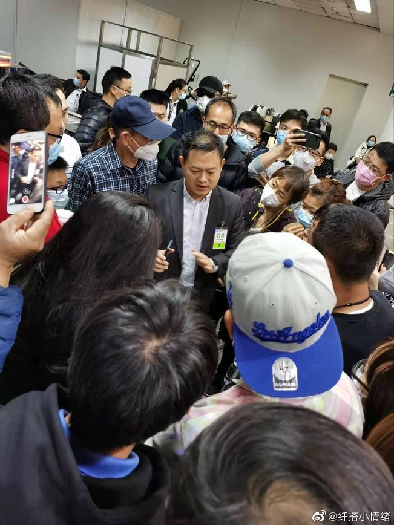

多家外航取消或削减到中国航线，国内航班现零乘客
原文链接 备份链接 30.01.2020本文字数：1810，阅读时长大约3分钟 导读：在民航局出台免费退票政策后，目前国内航司的航班也出现大量退票，航班客座率急剧下滑，某航飞三亚的航班甚至出现了零乘客，但因为回程有旅客还是需要正常飞。 …
北京时间1月31日，世界卫生组织宣布新冠肺炎是突发公共卫生事件后，中国出入境的国际航班大规模削减。根据去哪儿网的数据显示：1月30日被取消和限制销售的出入境航班数量占比达到了17%，1月31日取消出入境航班超过40%，2月1日变成49%，在2月2日接近55%。这次航班的调整涉及69个国家，140余家航司，共计1000余条航线。
调整数量最多的除了中美、中澳航线外，主要集中在中国周边的日韩和东南亚航线，这些航线均是中国人境外游的热门航线。随着春节后返程高峰的到来，直飞中国航线的取消导致各个国家不同程度上出现了中国游客的滞留情况。

记者 | 卡生
小纤2月3日的凌晨发布了一条微博，从菲律宾的首都马尼拉飞往北京、上海、成都、广州等直飞航班全部被取消，当天晚上有上千名中国游客聚集在马尼拉机场。从她的描述中可见场面一度十分混乱，很多老人和小孩没有地方休息，一晚上无法合眼，戴着口罩在等菲律宾大使馆的安排。这也是返程高峰在海外曝出的第一例中国游客大批量滞留他国的消息。
小纤提到，在出国之前她预订的是南航的机票，但在2号时被自动取消。很快她重新预订上了宿务太平洋航空公司从塔比拉兰到马尼拉后直飞广州的机票。在抵达机场时，她已经看到了许多中国的滞留游客，但她已经在塔比拉兰顺利值机，而且是联程机票，所以看上去后半段行程应该可以顺利登机，正当她庆幸之余才发现自己的航班5J286出现在了被取消航班之列。

当天晚上，滞留乘客中有人建了群，都是和她一样滞留菲律宾的乘客，群里刚开始有300多人，后来很快就到了上限，随着第二个群、第三个群的建立，机场的人越来越多。大家戴着口罩，或席地而坐，或是找个地方打一个盹。人越来越多，滞留者们开始有些慌乱，开始担心起是否能够回国。
小纤说，后来有人打通了菲律宾大使馆的电话，大使馆来了人开始和机场人员进行沟通，乘客中有人担当起了志愿者的角色，帮助所有滞留乘客信息。小纤说，那晚上大使馆的人一直在协调航班，大家排起了长队等候大使馆的统一安排。
小纤当时就觉得这么多人在特殊时期这么聚集在一起很有风险，她开始研究起了转机路线。根据当时能从马尼拉出发的航班情况，她选择了三条线路，A是香港转机；B是曼谷转机；C是澳门转机。滞留群里的信息很多也很混乱，大家的情绪被“滞留”一事搞得有些焦虑，他们中大多数人担心第三方国家（或地区）政策有变，形成二次滞留，或是到了第三方国家（或地区）中转签证无效被遣返回出发地。

小纤查看了最新更新的出入境情况，她觉得目前看来曼谷的情况在东南亚国家中相对宽松，从曼谷转道回国可能会是被取消航班概率最小的国家，随即她购买了前往曼谷转机的机票。她购买的转机机票并不是联程机票，需要在取行李后再过一次安检，所以泰国尚未取消的落地签证帮了她大忙。大概十分钟的时间落地签证顺利办好，小纤说，谁都是第一次遇到这样的特殊情况，心里没底，直到广播里传来登机的消息，她一颗悬着的心才算踏实下来。小纤顺利回国之后也了解了一些和她一样在其他国家和地区转机的伙伴，基本上没有特殊情况下都顺利回到了国内。在菲律宾机场等候大使馆安排的人中，也已经分批次地陆续回国，但由于滞留人数较多，所以还是有许多人在排队买票。
直到昨天，菲律宾游客滞留的情况得到了很大的缓解，笔者在小纤的帮助下进入了菲律宾滞留群，2月5日的消息对于很多滞留者来说有了更明确的转机方案，同时，菲律宾当地的旅行社也开始组织包机服务，志愿者小梅是长居在菲律宾的中国导游，她说10号之前，每天都有一班菲律宾皇家航空公司提供的包机服务可以从马尼拉直飞南宁，每一个航班提供150个位置。

除菲律宾乘客滞留的情况外，我身边还有许多在境外旅行的朋友遇到相同的困境，“最让人忧心的并不是航班取消，毕竟现在中国的疫情大家都能理解。最让人焦虑的是航司客服电话极难打通，驻华大使馆的求助电话一直占线，订票平台电话打通后我发现我前面有一万多人在排队解决问题，感觉自己处于‘三不管’地界。”陆苗现在人在澳大利亚，中澳直飞全面取消，她只能琢磨着先买到其他国家的机票，再从第三方国家转机回国。但困扰又来了，许多还有航线的转机国家如果不售卖联程机票的话，就需要面临中转签证的问题。
对于境外中国乘客面临航班取消，担心二次滞留，以及难以拨通客服电话的情况，我咨询了去哪儿订票平台的客服经理戴燚华，他给出了一些很实际的建议。
以去哪儿网为例，如果有海外乘客的航班取消，可以拨打境外的热线电话（0086）010-82872677，目前购票平台的境外优先级别正在提升，这意味着你可以比拨打境内电话95117客服热线，获得更高概率的接通可能。
如果境外航班取消，平台方的建议是直接退票而不是改签。改签在目前相对混乱的状况下效率很低，需要通过平台联系代理，再通过代理联系航空公司，如果有航线停航的情况，还要面临不同航空公司之间的签转问题，时间上需要等待相当长的时间。
如果你所处于的国家已经全面停止直飞中国的航班，那么去往第三方国家中转是回国的唯一选择。根据第三方国家对于中转许可以及中转签证要求来看，平台方给出了三个目前最好的选择。东南亚已经停直飞航线的国家，可以首选曼谷作为中转地；如果从美国飞往中国，可以首选在日本转机；如果从欧洲回中国，最佳中转地是迪拜，中东航司对于中国籍乘客可能会要求健康体检报告。值得注意的是，护照湖北籍贯，以及此前两周曾去过武汉等情况目前均会对签证和中转造成影响。
如果游客遇到在机场被取消航班的突发情况，最好的方式不是打电话平台和航空公司，大概率是接不通或者是长时间等候。在机场，可以直接在航空公司设立的值机柜台的服务点咨询第三方国家政策和最佳的转机组合机票情况。国际航空协会规定，如果签证不符合入境（过境），该航空公司有责任承运该乘客回出发地，所以每一家承运的航空公司为了避免出现遣返事件，会拒绝不符合政策的旅客登机，并在购票时给予提示。
以上，是平台方给出滞留海外的中国游客回国的一些建议。在这个建议背后，需要明确的一件事情是，目前所有国家的航线虽然有大量取消，但并不意味着无法返回中国。如果你正好是滞留在他国的一员，面对此时此刻的孤立无援，你知道，你并不是身处一座孤岛。
（本文图片由受访者提供）
作者档案
卡生
吸猫续命，写字浪天涯。
26分钟前


三联生活周刊
个人微博：@卡生_
#我在疫情一线#
话题征稿持续进行中
《三联生活周刊》全媒体现面向所有读者征稿。包括但不限于：奋斗在疫情一线的医护人员、媒体同行们的故事，专业人士对接下来防疫工作的建议……
此次征稿形式不限：文字（1500～2500字为佳）、图片（原创拍摄）、音频视频（原创录制）都欢迎。大家携手，共度难关！注：请务必保证故事真实、客观，不造谣、不传谣。
《三联生活周刊》微信公号投稿邮箱：zhuangao@lifeweek.com.cn来稿格式：#我在疫情一线#➕标题《三联生活周刊》官方微博参与话题：#我在疫情一线#《三联生活周刊》中读APP投稿邮箱（音频投稿为主，5分钟以内为佳）zhongdu@lifeweek.com.cn
期待你的来稿！

⊙文章版权归《三联生活周刊》所有，欢迎转发到朋友圈，转载开白请联系后台。未经同意，严禁转载至网站、APP等。
卡生
微信扫一扫赞赏作者 赞赏
长按二维码向我转账
受苹果公司新规定影响，微信 iOS 版的赞赏功能被关闭，可通过二维码转账支持公众号。
原文链接 备份链接 30.01.2020本文字数：1810，阅读时长大约3分钟 导读：在民航局出台免费退票政策后，目前国内航司的航班也出现大量退票，航班客座率急剧下滑，某航飞三亚的航班甚至出现了零乘客，但因为回程有旅客还是需要正常飞。 …
原文链接 备份链接 代号BR272的航班由中国台湾长荣航空营运，由马尼拉飞往中国台北。在几乎所有直飞航班都停飞、几经改签的情况下，这班马尼拉经停中国台北飞上海的航班，仍未让艳子如愿以偿。事实上，比艳子的状况更糟糕的是，马尼拉机场已滞留的近 …
原文链接 备份链接 【财新网】（记者 贾天琼）2月1日13:31，南方航空CZ30001航班执行包机从广州出发前往泰国普吉岛接滞留当地的湖北籍旅客，返回航班CZ30002将从普吉岛直飞武汉。 截至发稿，民航已部署5个航班，共接送湖北籍 …
原文链接 备份链接 2020年1月29日上午9点41分，“杭州发布”通报，1月28日杭州新增确诊人数19名，其中有2名，正是来自1月24日新加坡酷航的TR188航班。 该航班1月24日从新加坡樟宜机场飞往杭州萧山机场，当航班抵达的第二天， …
原文链接 备份链接 摘要：1月26日晚间，杭州官方发布“新型冠状病毒肺炎”最新通报，25日9时至24时，杭州市新增新型冠状病毒感染的肺炎确诊病例15例，其中2名确诊患者正是乘坐TR188次航班抵达杭州萧山机场的乘客。 文 | 殷盛琳 程静 …